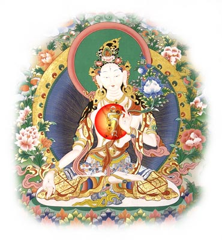

В заключение текущего цикла Учений в воскресенье, 22 апреля, Досточтимый Геше Джампа Тинлей дарует Благословение Белой Тары.
Благословение Белой Тары - это обширный буддийский ритуал, предназначенный для устранения препятствий и обретения благословения - силы,
которая может помочь измениться к лучшему.
Благословение будет проходить по адресу: м. ВДНХ, территория ВВЦ, павильон 84, Дом культуры ВВЦ.
Начало в 12-00, вход свободный. Приглашаются все желающие.
Проезд: ст. метро ВДНХ, первый вагон из центра, вход через главные ворота ВВЦ,
примерно 100 метров пройти по главной аллее, затем повернуть направо и пройти еще примерно 400 метров до ДК ВВЦ (павильон 84).
Местоположение ДК на схеме: